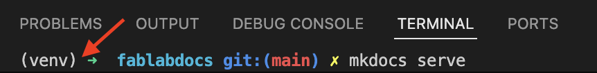

Website Guide
Denne guide er et forsøg på at guide dig igennem hvordan man installerer og konfigurerer sit værktøj til at redigere i hjemmesiden.
Siden er bygget ved hjælp af Material for MkDocs, koden bor på GitHub og selve hjemmesiden er hostet af Github Pages, der ved hjælp af en Github Action automatisk genererer hjemmesiden når koden bliver opdateret.
Den del er beskrevet i ci.yml filen. Den er baseret på dokumentationen fundet hos Material for MkDocs og kun opdateret minimalt.
Vores værktøjskasse til denne guide er:
-
En Windows maskine
-
Visual Studio Code, download
-
Material for MkDocs, website
-
Python, python.org
-
Git, download
Hurtig overflyvning:
Installer Visual Studio Code, Git, og Python på din windows maskine.
Klon fablabskanderborg/docs repoet
(indsæt billede af VS Code der viser dette)
lav et Python Virtual Enviroment til mkdocs og plugins
source venv/bin/activate
pip3 --version
pip --version
Bekræft at du er i dit Virtuel Enviroment og installer mkdocs

pip install mkdocs-material mkdocs-static-i18n
Nu burde du kunne bruge
mkdocs build
mkdocs serve